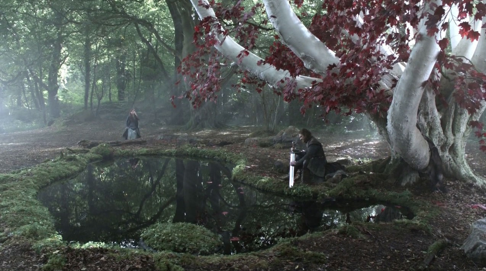
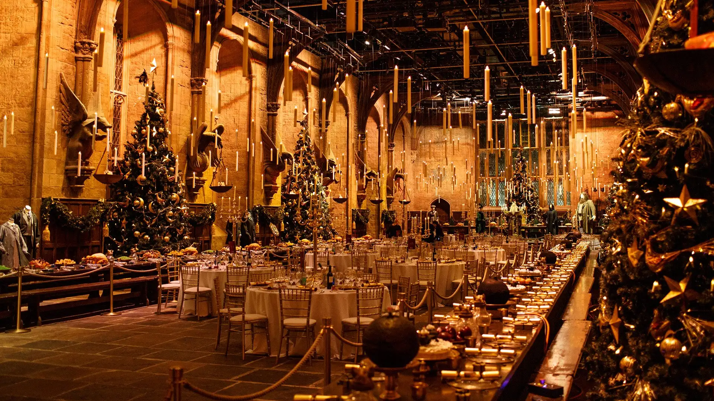
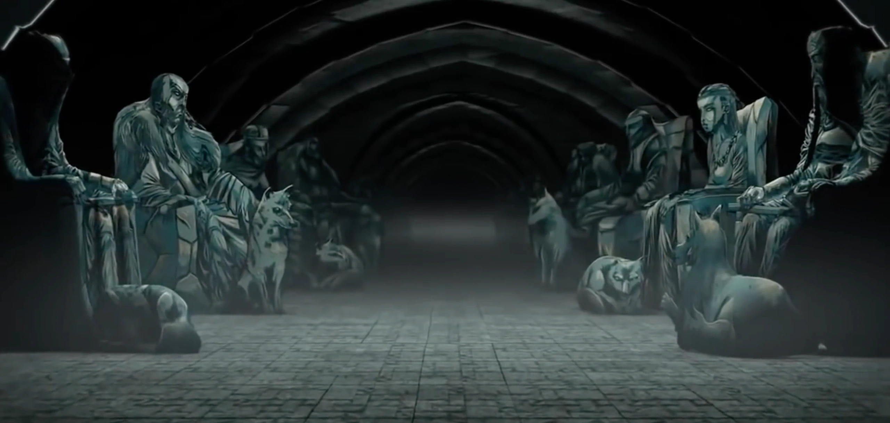

El Bosque de los Dioses (Godswood)
Es un santuario natural de tres hectáreas que quedó completamente virgen dentro de los muros del castillo.

El Árbol Corazón (Heart Tree)
Es un árbol milenario de la especie arciano (Weirwood), con corteza blanca y hojas rojas como la sangre, que tiene un rostro ancestral tallado.
El Estanque
Posee aguas termales oscuras y frías donde los lores del norte van a rezar o meditar en absoluto silencio.
El santuario natural de Winterfell se rige por estrictas normas ancestrales que todo visitante debe cumplir:
- Guardar absoluto silencio: Es un lugar de paz y reflexión profunda. No se permiten gritos ni ruidos molestos para no perturbar a los viejos dioses ni a quienes vienen a meditar.
- Prohibición de portar armas de acero con malicia: Tradicionalmente, dentro del santuario reina una tregua sagrada; nadie puede derramar sangre inocente ni pelear bajo las ramas del Árbol Corazón.
- Respeto sagrado al Árbol Corazón (Weirwood): Está prohibido dañar, cortar o marcar la corteza blanca y las hojas rojas del árbol milenario. Su rostro tallado es considerado un testigo viviente de la historia.
- Juramentos bajo las raíces: Cualquier promesa solemne, casamiento o pacto de honor realizado frente al estanque y las raíces del árbol se considera inviolable, ya que los dioses antiguos son testigos.
El Gran Salon (Great Hall)
"El Gran Salón es el corazón político y social de Winterfell. Se trata de un espacio imponente de piedra y vigas de roble, diseñado para acoger a cientos de personas en banquetes y asambleas bajo el liderazgo de la Casa Stark."

| Sector | Elemento destacado | Descripción |
|---|---|---|
| Tarima | Trono de piedra con lobos huargos tallados | Espacio elevado donde se ubica el Lord de Winterfell y su familia directa para presidir los banquetes y recibir peticiones. |
| Foso Central | Hoguera de piedra longitudinal | Un canal de fuego continuo que cruza todo el suelo de piedra para calefaccionar el enorme espacio durante los crudos inviernos. |
| Zona de Bancas | Mesas largas de roble macizo | Capacidad aproximada para albergar a 500 invitados, donde se sientan los vasallos, caballeros y guerreros del Norte. |
| Paredes de Piedra | Estandartes de las casas leales | Decorado con las insignias de las familias aliadas (como los Umber, Karstark y Mormont) que reafirman la lealtad hacia la Casa Stark |
Las Criptas de Winterfell
"Las Criptas de Winterfell son los vastos túneles subterráneos ubicados bajo los cimientos del castillo, donde reposan las estatuas de piedra y los restos mortales de los antiguos Reyes de Invierno y señores de la Casa Stark."

Zona subterránea de acceso restringido.
Complete el siguiente formulario oficial
para solicitar el ingreso a los niveles inferiores y consultar los registros ancestrales: